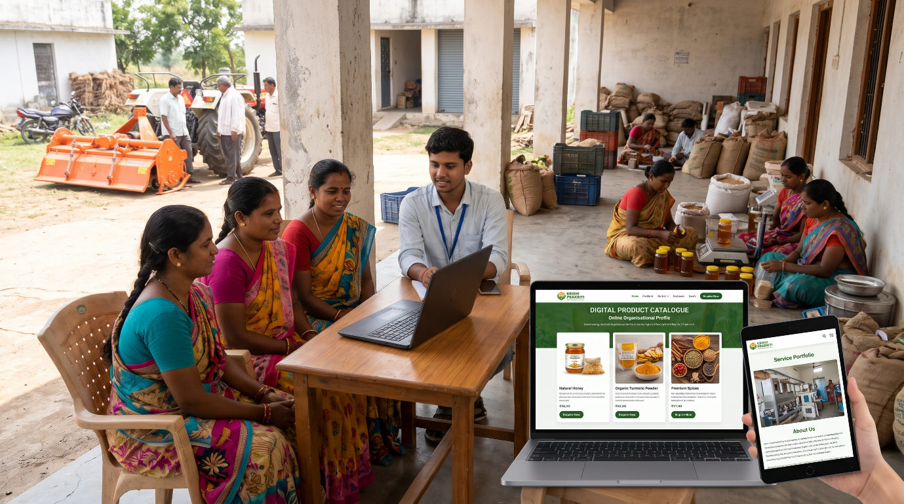
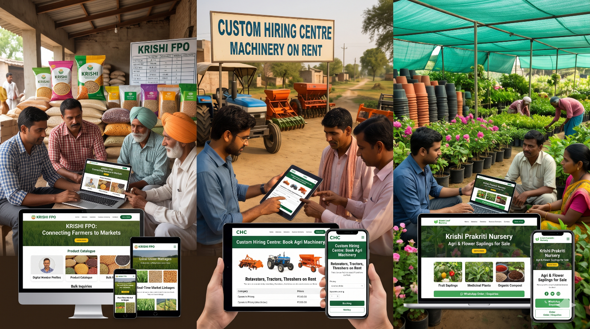

KRISHI PRAKRITI provides affordable, customised website development and digital solutions to empower Farmer Producer Organisations (FPOs), Self-Help Groups (SHGs), and Custom Hiring Centres (CHCs).
We help rural organisations establish a professional digital presence, strengthen market connectivity, showcase their products and services, and enhance business visibility through accessible and scalable web technologies.


Professional, mobile-responsive websites tailored to the identity and operational needs of FPOs, SHGs, and CHCs.
Online organisational profiles, product catalogues, service portfolios, and digital branding.
Digital product listings, buyer enquiries, and online market access to expand business opportunities.
SEO, social media integration, website maintenance, and affordable technical assistance.